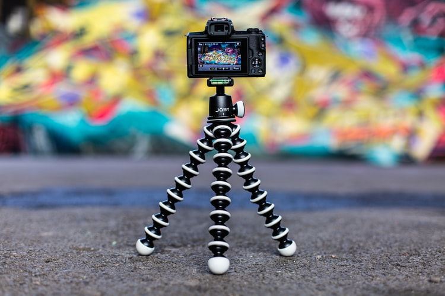

KingPod - Tripod Stand
We brings for you a flexible mini tripod which is a gorilla pod tripod for all mobiles and digital cameras for people who love to capture landscapes, sceneries and people. So mount your camera anywhere you want and take amazing pictures. It comes with a secure mounting and is portable and lightweight. This Tripod is suitable for DSLR/SLR camera weighing up to 1 kilograms. Suited for DSLR with 18mm-55mm or similar weight lenses. And also action cameras & mobile phones as it come with a premium. The flexible and lightweight legs allow you to easily store and carry when on the go.